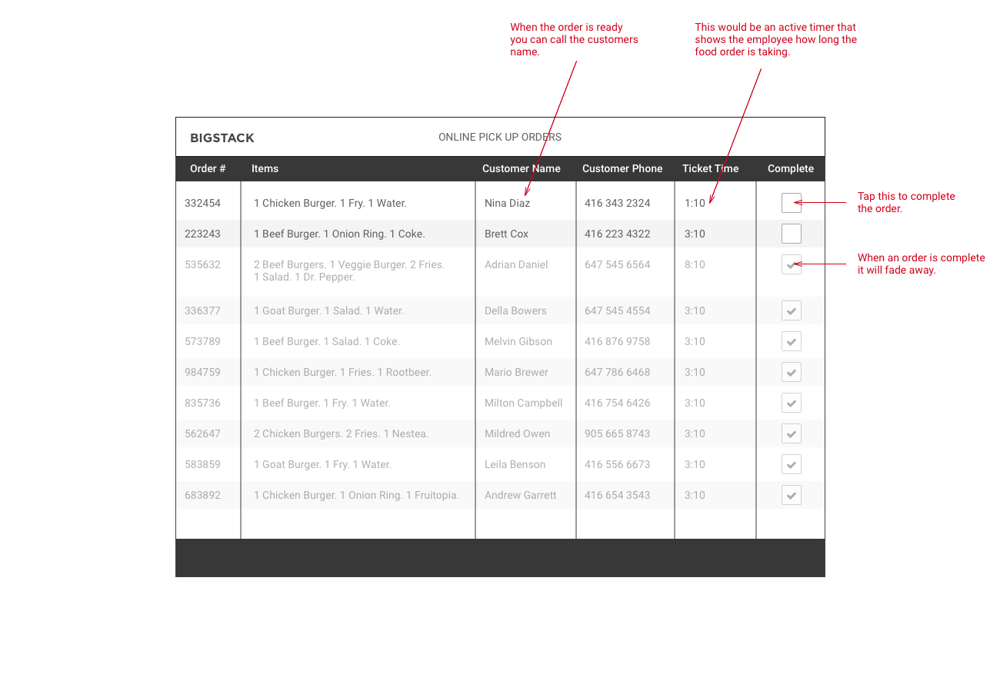
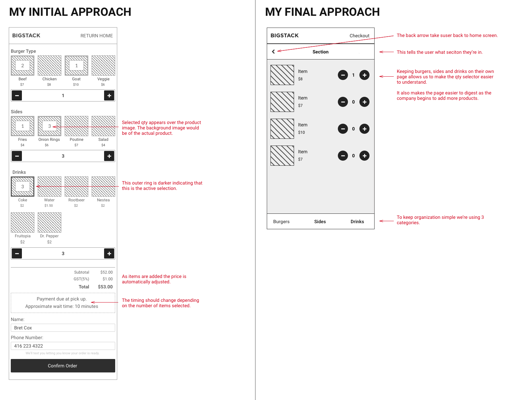

Big Stack - Online ordering for a food truck
This is a test project I worked on to help give my portfolio some more consumer facing breadth. I also wanted to help give an insight into my process without discussing private information of the companies I work for.
Big Stack background
Big Stack, a food truck company wants to generate more business through their online website. They've noticed that the line-ups outside the trucks are getting so long that they're starting to lose customers. To address this, the company wants to build on their website and create a system where customers can place their order online, then pick it up and pay at the food truck.
Getting started - sketching ideas on the whiteboard
When I started tackling this project I began by drawing out some user flows and making a list of the different screens a user would need to see. During my brainstorming I began to think of the process for taking orders inside of the truck, there would have to be an easy system to track and complete orders from inside. I initially created two different user flows. The first user flow is that of the customer placing a simple order. The second is that of the food truck employee receiving the order and completing it. As I worked further on this project I began to explore more use cases but this portfolio piece focuses on the customer facing product.
Wireframing my ideas
At the beginning of the project I was trying to get everything onto one page as I had a theory, it might make the ordering process easier. It also helped that the food truck didn't have many options. However the more I explored this route the more I learned that seperate pages would create an easier experience for the end user, it also allowed the food truck to grow its food options in future.
Working with higher fidelity
As I started to work in higher fidelity I had to work with the existing logo of Big Stack. I tried to make sure that when a customer visited this ordering application it felt similar to the main corporate website and the branding they saw when visiting the food truck. The product photos I used are just place holders, the client would need to have professional photos taken of their products that use consistent lighting and angles.


Animation
I used Flinto to prototype the animations. Flinto is a really great program that helps me design exactly how I want something to work before it’s actually built. It allows me to push the boundaries of web and app animation and produce something that looks very slick.